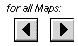
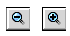
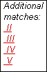
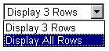

|
Using the Central Controls
There are six central control actions you can take:
Changing the Maps Displayed
On the left side of the central controls is a list of all available maps for the chromosome. A check appears to the left of all maps that are currently visible.
To remove a map from the display
The window redisplays without the map.
To add a map to the display
A checkmark appears in the box.
The window redisplays, including the map.
Scroll Left/Right
You can scroll the view of all maps in the window using the arrows: 
To scroll
The window redisplays with all maps illustrating a segment of the chromosome left or right of of and overlapping with the previous segment.
Zoom In/Out
You can zoom in or out of all map details using the zoom buttons:  .
The current zoom level is identified in the individual map menus:
.
The zoom level indicates the magnification of the display. At a zoom level of 1x, the entire chromosome appears. At a zoom level of 2x, 1/2 of the map is visible; at 4x, 1/4 is visible, etc.
To zoom in on all maps
The window redisplays with all maps zoom in to the next standard level.
To zoom out on all maps
The window redisplays with all maps zoomed out to the next standard level.
Search
You can search for a specific mappable element--a genetic marker, clone, gene, etc. or an alias--using the search options:
With the central controls you can select to search
- All maps selected in the map list to the left
- All maps available for the current chromosome
- All chromosomes
To search for a mappable element
- Select a search option from the drop-down list

- Type in the name of the element you're looking for (wildcards can be used, e.g. *snp*, ap?, F2K*)
- Select Find
The window redisplays. The names of the matching maps appear in red in the map list at the top:
The matching element is highlighted in yellow in the maps. Any maps in the window that do not contain the element appear with a dark gray background. If the "all chromosomes" search option is chosen and the element is found on more than one chromosome, a list of other chromosomes with hits will appear to the right of the map list under the header "Additional matches". Clicking on a chromosome will display hits on that chromosome.

Show or Hide Entities
You can choose to display all entities or only three rows of entities on the displayed maps:

The default is set for displying 3 rows of entities. This function was implemented to maximize the diplay of multiple maps without cluttering the display window with many entities for each map. Hidden entites with the 'Display 3 Rows' option are depicted by black tick marks on the bottom of the entities for each map. Displayed entities are depicted by red tick marks.
For more information about the tick marks, see "Close-Up on Sequence Maps", "Close-Up on Genetic Maps", or "Close-Up on Physical Maps".
To select the display of all entities
Print Maps
You can print maps from the viewer without the menus using the View Print-Version option:
To print maps
| To report problems: curator@arabidopsis.org |
|